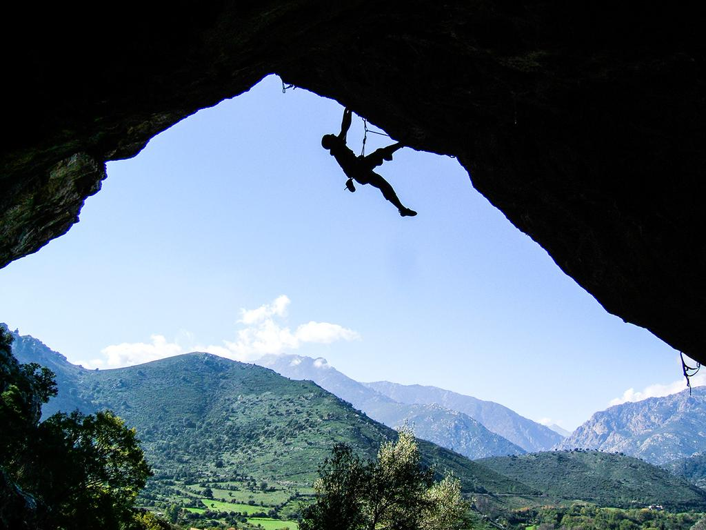

Olivier Guittet
Hello I am Guittet Olivier and this is my website
On this website you will find information about my professional and personal activities.
Above the link you can access the information about my hobbies.
My History

Personal background:
My name is Guittet Olivier, I was born on 17 November 2004 in Wissembourg, a small town in the north of the Bas-Rhin.
in the north of the Bas-Rhin. I live in Soultz sous Foret, a village in the Bas-Rhin. I have several hobbies, the
trumpet which I have been playing since I was 8 years old, I also like history and geopolitics and of course
I also like history and geopolitics and of course electro-technology and computers. I also have other hobbies that you can discover on the page my hobbies.
Academic background :
From kindergarten to secondary school I followed a bilingual pathway where I obtained my brevet in
French and
German and my A2 certification in German. At the Lycée Stanislas in Wissembourg I then
did
a 2nde Euro then I did a Bac Technologique STI2D option SIN. In 2022 I obtained my Bac with
with honours and joined the BUT Network and Telecommunications course at the IUT in Colmar.
Why did I join the BUT RT?
Je m’appelle Guittet Olivier, Je suis née le 17 novembre 2004 à Wissembourg petite ville dans le
nord du
Bas-Rhin. J’habite a Soultz sous Foret, village dans le Bas-Rhin.
Parcours scolaire :
De la maternelle au Collège j’ai suivi un parcours bilingue ou j’ai obtenu mon brevet en français et
allemand et ma certification de niveau A2 en Allemand. Au Lycée Stanislas à Wissembourg j’ai ensuite
fait
2nde Euro puis j’ai fait un Bac Technologique STI2D option SIN. En 2022 j’ai obtenu mon Bac avec
mention
assez bien et intégrer la formation BUT Réseau et Télécommunications a L’IUT de Colmar.
My Goals
Je m’appelle Guittet Olivier, Je suis née le 17 novembre 2004 à Wissembourg petite ville dans le
nord du
Bas-Rhin. J’habite a Soultz sous Foret, village dans le Bas-Rhin.
Parcours scolaire :
De la maternelle au Collège j’ai suivi un parcours bilingue ou j’ai obtenu mon brevet en français et
allemand et ma certification de niveau A2 en Allemand. Au Lycée Stanislas à Wissembourg j’ai ensuite
fait
2nde Euro puis j’ai fait un Bac Technologique STI2D option SIN. En 2022 j’ai obtenu mon Bac avec
mention
assez bien et intégrer la formation BUT Réseau et Télécommunications a L’IUT de Colmar.